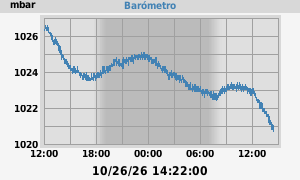
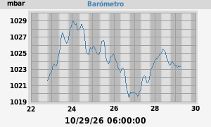
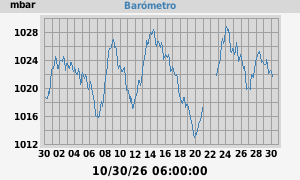

mín: 1020.7 mbar a las 14:20:28
máx: 1024.9 mbar a las 00:00:37

mín: 1020.7 mbar a las 14:20:28 (Monday)
máx: 1024.9 mbar a las 00:00:37 (Monday)

mín: 1012.4 mbar a las 10/19/26 18:29:05
máx: 1029.3 mbar a las 10/23/26 23:45:27